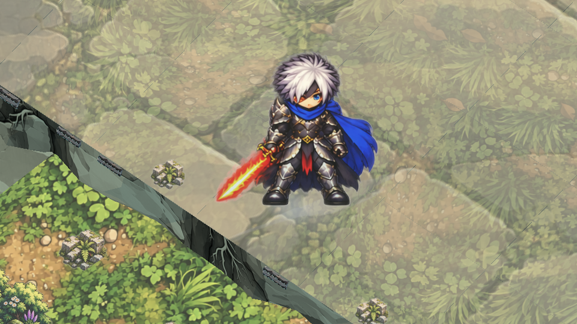

알펜·6화 그래픽 시범 개선
실제 Unity 실행 화면을 원본 그대로 보존한 비교입니다. 위 전장 비교는 같은 카메라와 편성입니다. 확대 동작 비교는 개선된 전장 위에서 검사용 알펜 1명의 기존/새 원화만 바꿔 촬영했습니다. 바닥의 전후 차이는 위 전장 비교에서 확인하세요. 카메라 확대 화면에는 HUD가 없으며 실제 전장 화면에서 HP바와 그림자를 별도로 확인했습니다.
대기·눈감음·일반 공격·피격은 새 원화, 이동·기술·궁극기는 기존 원화를 사용합니다. 2340×1080 화면은 Windows Editor 검사이며 휴대폰 플레이 결과가 아닙니다. 원본 해시와 촬영 조건
실제 6화 전장 · 동일 카메라
반대 방향 · 동일 카메라
대기 · 실제 확대 화면

개선 전alphen-hq_0_0 · 0.195초
개선 후alphen-pilot-idle-front-0 · 0.198초
일반 공격 · 접촉 원화
피격 · 실제 자세
네 방향 눈감음 · 실제 관측 프레임
피격 후 새 대기 그림으로 복귀
가로 모바일 화면 비율 · Windows Editor 검사